| 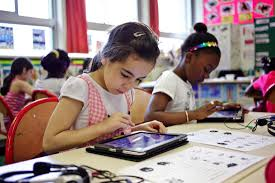 |
Primaire Maîtrise des outils numériques de base (utilisation d'un ordinateur, calculatrice, tablette, ...) → Simple usage |
| 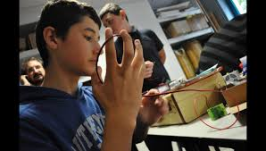 |
Secondaire Enseignements technologiques et scientifiques (concevoir un circuit éléctronique, bases de la programmation) → Appréhender les mécanismes de base |
| 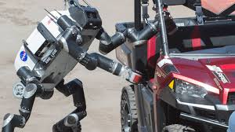 | Supérieur Créer et innover dans les domaines clés des STIC (traitement du signal, automatique, embarqué, sciences des données, mathématiques appliquées ...) → Concevoir, Inventer |
STIC et éducation
STIC = Sciences et Technologies de l'Information et de la Communication
STIC et Plateformes
|
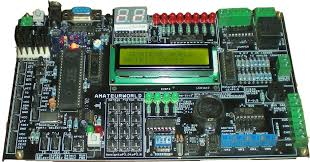 Cartes de developpement | 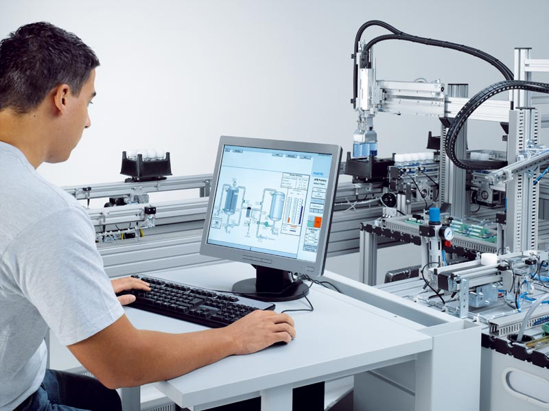 Demonstrateurs, banc de test |
|
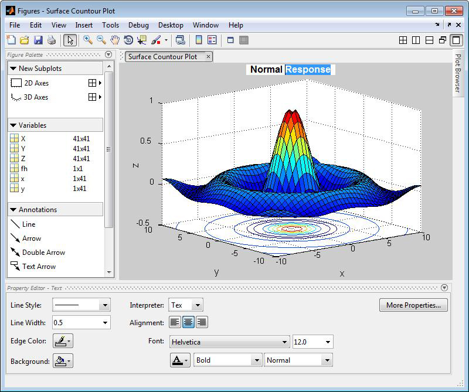 Suites logicielles |
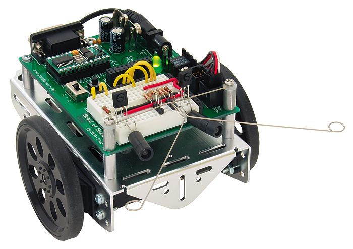 Robots |
Contexte
|
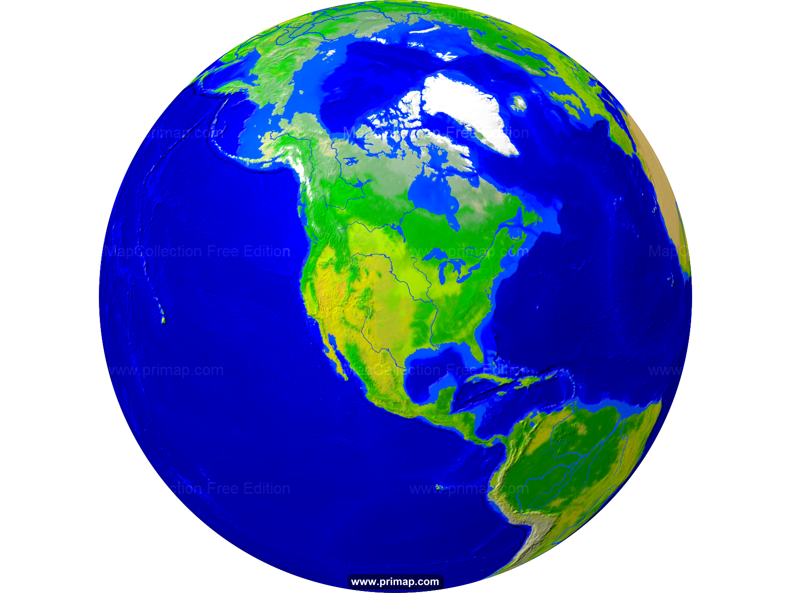 Enjeu géo-stratégique Monopole de quelques pays sur les noyaux technologiques (microélectronique, machine-learning, ...) |
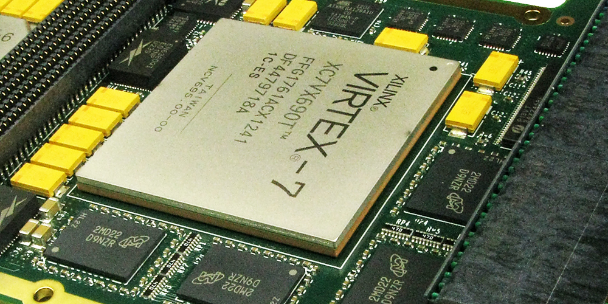 Verrouillage de Propriété Intellectuelle Circuits, logiciels, procédés, politique de données Vente liée connaissances-outil (Matlab, Wolfram) |
|
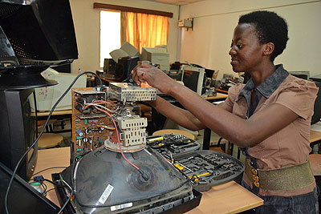 Electronique jetable à usage unique Non-reparable, non-recyclable, non-revalorisable |
Déresponsabilisation des utilisateurs Disparition de la composante créative (tablettes, smartphone) |
Retour d'experience
Programme OCDE "Connectés pour apprendre"
| Hypothèse de départ : « Les outils numériques vont aider les élèves à apprendre ET comprendre » | ⇒ Échec (prévisible) ! |
« Lorsque les élèves utilisent leurs smartphones pour copier-coller des réponses toutes faites aux questions qui leur sont posées, il est peu probable que leurs capacités intellectuelles s’en trouvent renforcées. »
« Combien d’enfants choisiraient de jouer à un jeu vidéo s’il était de la même qualité que les logiciels que l’on trouve dans de nombreuses classes du monde entier ? L’impact de la technologie sur l’offre éducative reste sous-optimal, en raison de la possible surestimation des compétences numériques des enseignants comme des élèves, de la naïveté de la conception et de la mise en œuvre des stratégies dans ce domaine, de la mauvaise compréhension de la pédagogie, ou de la piètre qualité globale des logiciels et didacticiels éducatifs. »
« Le fait de garantir l’acquisition par chaque enfant d’un niveau de compétences de base en compréhension de l’écrit et en mathématiques semble bien plus utile pour améliorer l’égalité des chances dans notre monde numérique que l’élargissement ou la subvention de l’accès aux appareils et services de haute technologie. »
⇒ Absence de démarche pédagogique associée
⇒ Outils ternes, fermés, inutilisables
Manque Identifié
Savoir-faire historiques (XX
ème
siècle)
|
|
Demarche par diffusion
↪ Connaissances ouvertes accessibles (web, documentation)
↪ Plateformes libres populaires
Savoir-faire inédits (XXI
ème
siècle)
|
|
↪ Reservés aux spécialistes (R&D, labos, journaux scientifiques)
↪ Ressources ouvertes rares
(payantes, jargon, travaux non-reproductibles ou cible-spécifiques)
(payantes, jargon, travaux non-reproductibles ou cible-spécifiques)
Demarche par offuscation
↪ Plateformes ouvertes inexistantes !
Un robot modulaire
Plate-forme ouverte d'enseignement pluridisciplinaire
| (i) Prix abordable | (ii) Technologies ouvertes | (iii) Ressources pédagogiques associées |
Pourquoi un robot mobile ?
- Pluridisciplinarité technologique (signal, RTOS, automatique, apprentissage...)
- Se confronter aux réalités physiques ⇒ sortir des modèles simulés
- Mobilité ⇒ sortir de la classe, travailler "sur le terrain"
- Dimension ludique
Créer et animer une communauté d'utilisateurs
- Enseignants, hobbyists, ingénieurs, ...
- Contrer les cercles vicieux des licences via l'open-hardware, l'open-source et le logiciel libre.
- Modèle contributif
L'existant
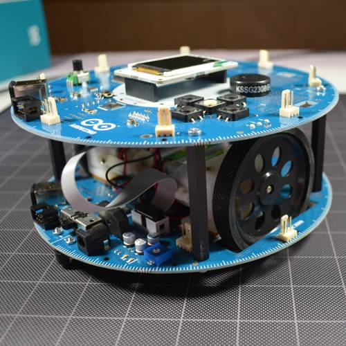
| 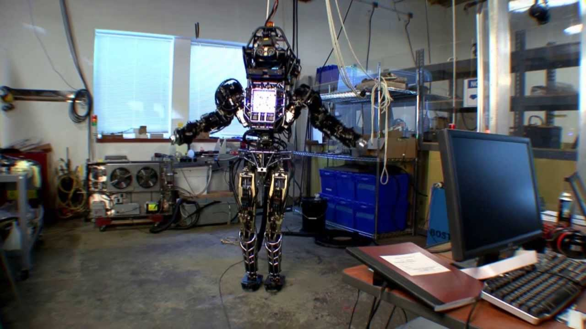
| ||||||||
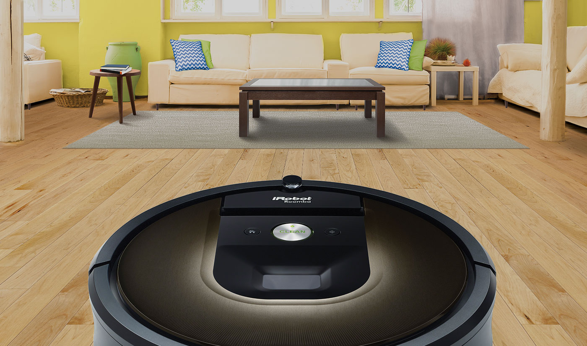
|
Segment ouvert
Robots modulables pour l'éducation et les hobbyists | ||||||||
L'heritage
Logiciel libre - Free Sofware Foundation 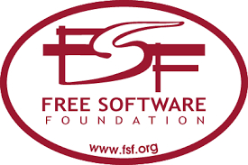
- 1. Liberté d'utiliser le logiciel
- 2. Liberté de copier le logiciel
- 3. Liberté d'étudier le logiciel
- 4. Liberté de modifier le logiciel et de redistribuer les versions modifiées
 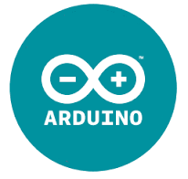
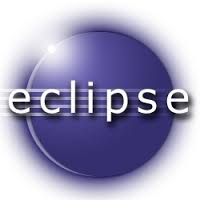
Fondations logicielles (USA), Charities, Modèles participatifs
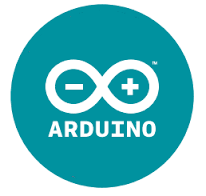
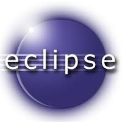
Fondations logicielles (USA), Charities, Modèles participatifsArduino, Raspberry Pi Foundation,
Fondation Eclipse
Initiatives libres de grandes compagnies
Beagle Board (Texas Instruments)
Beagle Board (Texas Instruments)
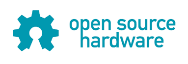
Open hardware
- 5. Liberté de fabriquer et distribuer du matériel basé sur le plan
- 6. Liberté d'acceder aux sources de la conception
- 7. Composants facilement approvisionnables, procédés standards, infrastructures ouvertes
- 8. Exploitation d'outils de conception open-source
Business Model
Activités
- Développement matériel et logiciel
- Animation communauté
- Formations et interventions en milieu scolaire
Segments consommateurs
- Écoles
- Étudiants
- Hobbyists
- Laboratoires de recherche
- Milieu culturel et associatif, animation
Business Model (2)
Ressources
- Lien établissements publics
- Fablabs
- Mise à disposition plateformes laboratoire (ETIS, ENSEA, UCP)
- Communauté, base de connaissance animée, contributeurs
Politique de prix
- Prix d'appel ~ 300€
- Formation au taux HETD
Business Model (3)
Canaux
- Concours
- Maker faires
- Communication universitaire
- Evenements culturels/scientifiques (conférences, vulgarisation scientifique)
Relations consommateurs
- Relation participative donnant-donnant
- Support en ligne, fiches TP
- Formations
Business Model (4)
Coûts
- Recherche et Developpement prototype
- Composants, matières premières
- Prestations industrielles (e.g. mécatronique)
- Salaires
- Protection innovation et marque
- Publicité et relations médias
Revenus
- Vente plateformes
- Financement participatif
- Contrats de co-developpement
- Leasing
- Interventions
Matrice SWOT
Forces
- Experience : Enseignement superieur (concepteurs = utilisateurs), Coupes de robotique, Ingenieurs R&D robotique, Auto-entreprise numérique
- Docteurs en STIC, thématiques complémentaires (maîtrise technos soft/hard)
- Pas de coûts d'infrastructure. Peu de stock (flux tendu)
- Indépendant de toute technologie propriétaire
→ Réadaptation aisée aux mutations technologiques - Modularité = personnalisable
- Contacts écoles, universités, collègues chercheurs, milieu associatif
- Promesses d'achat
Faiblesses
- Modèle de PI inhabituel
→ absence de levier technologique - Deficit profil technico-commercial
- Apport initial
Menaces
- Amalgame avec segments proches (robotique jouet, kits de developpement)
- Emergence du segment "robotique domestique" (service → hobby → éducation)
- Démocratisation des prix dans les marchés voisins → petite série vs grandes industries implantées
- Noyaux technologiques propriétaires incontournables (e.g. FPGA)
Opportunités
- Outils professionnels utilisables gratuitement si pour du libre (e.g. Altium)
- Actualité favorable : Nouvelles directives gouvernementales en faveur du libre dans l'education, resultats enquêtes OCDE
- Tissu local favorable : Forte implication des collectivités locales (e.g.Futur en seine)
- Status JEU/JEI, CIR, Jeunes Docteurs
- Fablabs à proximité